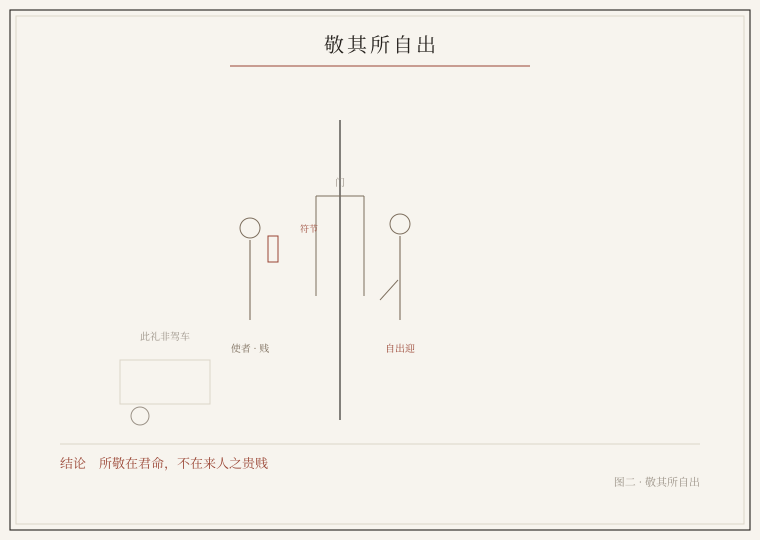

曲礼上 · 一·一百二十一 · 第 119 课
君有召命，即使来传命的是个贱人，大夫士也要亲自出迎。注指出这里的「御」当读作「讶」，是迎，不是驾车。
说什么事：君命召，虽贱人，大夫士必自御之。
落在哪一层：仪，兼及礼意。一句之中有一字之辨。
为何编在此位：上节论路上之敬，此节论受命之敬。敬在车上，亦在门口。
【经】君命召，雖賤人，大夫士必自御之。
【注】御當為訝。訝，迎也。君雖使賤人來，必自出迎之，尊君命也。《春秋傳》曰：跛者御跛者，眇者御眇者，皆訝也，世人亂之。
御 注「御当为讶。讶，迎也」。疏「郑引《春秋》证御者迓也」。
贱人 疏「君之使者，假令是贱人为之来」。
自御之 注「必自出迎之」。疏「使者虽贱，而君命可尊，故虽大夫士贵，亦自出迎之也」。
《春秋传》之证 疏引成二年鞍之战事：《公羊传》「萧同侄子者，君之母也，窥客或跛或眇，于是使跛者迓跛者，眇者迓眇者」；《穀梁传》「使跛者御跛者，眇者御眇者，秃者御秃者，偻者御偻者」。郑谓「彼既以为讶，此御故宜是讶，而世人乱之，读云御耳」。
世人乱之 注末四字，是校勘之语：字形相近，读音相混，一混就混了两千年。
君有召命，即使来传命的是个低贱之人，大夫、士也必须亲自出迎。
一句十六字，讲的是「敬其所自出」。所敬者不是来人，是君命。故来人之贱，不减其敬；而这一层意思，注家用一个字的校勘把它救了出来。
第一层 敬在命不在人 注「尊君命也」。来人是使者，不是本人；敬使者，是敬其所携。
第二层 自出 注「必自出迎之」。一个「自」字，是不假手于人。派家人去迎，意思就轻了。
第三层 虽贱人 经特别标出这三个字，正因为人情最容易在这里打折：看人下菜，是古今通病。
第四层 一字之辨 若无郑注，此句会被读成「亲自为他驾车」。疏引两传，证「御」即「讶」。读书之难，常在字缝里。
与今日何干 上级的传话、平台的判罚、监管的问询——分量在出处，不在来人的级别。这一点，值得记住。
| 左 | 右 |
|---|---|
| 君命召 | 有命相呼 |
| 虽贱人 | 使者之位卑，不减命之尊 |
| 必自御之 | 自出迎之，不假手他人 |
| 御当为讶 | 讶，迎也 |
| 尊君命也 | 所敬在命，不在来人 |
画一处门槛：门外站着一个衣着简朴的来使剪影、手中持一枚小小的符节；门内一人已跨出门槛、身体前倾相迎（只画侧影、不画面容）；两人之间留一段距离，门槛横在中间。门内侧地上另有一辆车的极小轮廓，车轮完整、未动，示意此礼非驾车。不写文字。赭色只用在来使手中那枚符节。
